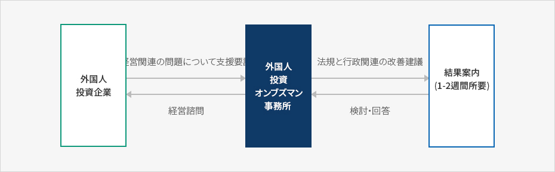
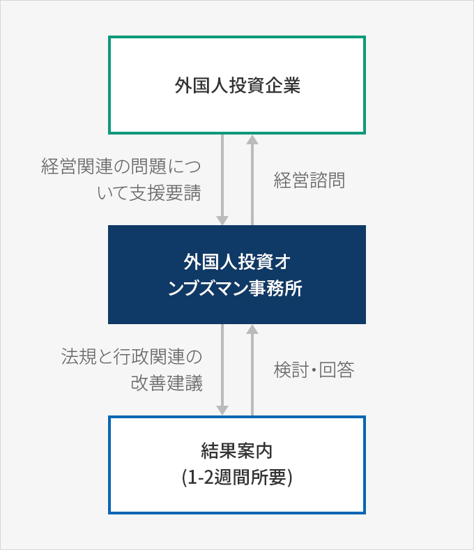

外国人投資オンブズマン
- Home
- IKサービス
- IKの紹介
- 外国人投資オンブズマン
外国人投資オンブズマンの機能と権限
委嘱及び機能
外国人投資オンブズマンは、産業通商資源部長官の推薦と外国人投資委員会の審議を経て大統領が委嘱する。外国人投資オンブズマンは、外国人投資家及び外国人投資企業の不便・苦渋事項に関する調査と処理、外国人投資制度の改善方策の策定と関係行政機関及び公共機関に対する履行の建議、その他外国人投資家及び外国人投資企業の不便・苦渋事項の処理業務に必要な諸業務を遂行する。権限
-
外国人投資オンブズマンは、外国人投資家及び外国人投資企業が抱える問題を処理するために、必要であれば、関係行政機関及び関係機関の長に下記の事項に対して必要な協力を要請することができる。その場合、要請を受けた関係行政機関などの長は、特別な事由がない限り、それに従わなければならない。
- 関係行政機関などに対する説明又は大統領令で定める基準による資料の提出
- 関連職員・利害関係者などの意見陳述
- 現場訪問への協力
- 外国人投資オンブズマンは、外国人投資家及び外国人投資企業の問題事項の処理結果によって、必要であれば当該関係行政機関及び公共機関の長に関連事項の改善を勧告することができる。
※ 関連規定 : 「外国人投資促進法」第15条の2 第③項、第④項
苦情処理機構とホームドクター制度
苦情処理機構
外国人投資オンブズマンの業務を支援するためにKOTRAに苦情処理機構を置き、苦情処理機構の長は外国人投資オンブズマンである。苦情処理機構の長(外国人投資オンブズマン)は、外国人投資家及び外国人投資企業の不便・苦渋事項を処理するために、関係行政機関や関係機関に協力を要請することができる。その場合、協力要請を受けた機関は、7日以内にそれに対する処理結果又は意見を通知しなければならない※ 関連規定 : 「外国人投資促進法施行令」第21条の4 第③項
ホームドクター制度
外国人投資家及び外国人投資企業の苦情事項を効率的に処理するために、地域別・投資企業別に担当のホームドクター(苦情処理専門要員)を指定して運営している。- 支援分野：労務/人事、租税 / 税務、環境、金融 / 外国為替、関税 / 通関、建設、IT&知的財産権、定住環境など
苦情処理の手続き
外国人投資家又は外国人投資企業の問題事項の苦情処理手続きは下記のように行われる。
- 専門委員(ホームドクター)の電話、現場訪問、オンライン、メールなどで受け付ける。
- 苦情の受付後に、担当の専門委員は苦情の内容を検討した後、関係機関があれば当該機関に連絡して解決方策を模索する。
- 苦情処理関連事項は、KOTRA顧客管理システム(SCRM)に入力・管理し、問題が解決すれば当該企業に通知して支援を完了する。
※ 出所 : 2018外国人投資オンブズマン年次報告書(2019.4)
苦情処理の手続き



- 外国人投資企業(経営関連の問題について支援要請 )
- 外国人投資オ ンブズマン事務所(法規と行政関連の改善建議)
- 結果案内(1-2週間所要, 検討・回答)
- 外国人投資オ ンブズマン事務所(経営諮問)
- 外国人投資企業

外国人投資関連規制情報サービス
外国人投資オンブズマン事務所は、国務調整室規制改革委員会とともに、規制立法の過程で疎外されている外国人投資企業の現場の意見を取りまとめて反映するために、オンラインサービスの「外国人投資関連規制情報サービス」を運営している。政府と国会で立案される外国人投資関連規制内容を英語に翻訳して提供しており、 外国人投資企業から提起される意見を関連部処に伝えている。
サービス内容
| 区分 | サービス 内容 |
|---|---|
| 政府立法 | 政府発議規制関連の新設及び強化法案(施行令、施行規則)に対する英語翻訳、要約の提供 |
| 関連法案内容に対する外国人投資企業の意見コメントを取りまとめて英語翻訳及び政府担当部処に伝達 | |
| 議員立法 | 議会発議規制関連の新設及び強化法案に対する英語翻訳、要約提供 |
| 関連法案の内容に対する外国人投資企業の意見コメントを取りまとめて英語翻訳及び政府担当部処/議会関係者に伝達 | |
| 規制改革申聞鼓 (既存規制の改善建議) |
施行中の既存の規制関連建議事項を取りまとめて政府所管部処の回答を伝達 |